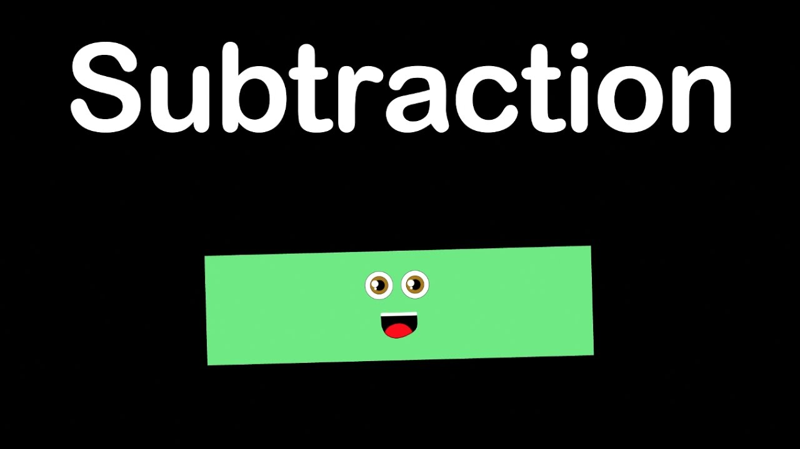

Subtraction is very similar to addition. There are two main methods to do subtraction in your head. The first is the partial differences method. This method is more intuitive but can take a long time when subtracting difficult numbers. Here is how to do the problem 813-426 with the partial differences method:
This method is simple, but it may be hard to remember your answers when you are subtracting numbers with 4 or more digits. The count up method is slower at first but is easier than the partial differences method. Here is how to use the count up method with the same problem:
Eventually, you may find it easier to add 400 instead of 300 at the beginning of a problem like this. After that, you are left with 826-813 which should be a simple partial differences problem. Mental subtraction should take about the same amount of time as addition; you will eventually be able to do a three digit problem in less than five seconds.
Practice Problems:
89-62
721-304
7136-4749
In everyday situations, it can be useful to subtract a number from 100. You can do this by subtracting the number from 99 then adding 1. This is relatively easy to do because you will never have to borrow. Eventually, you will be able to subtract a number from 100 instantaneously. This can be useful in calculating how much change you should get when buying someone.
